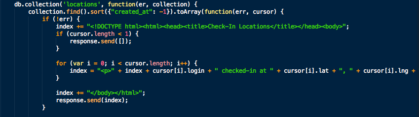

Security Assessment of Check-In Locations
Prepared by Sylvie Abookire ~ Friday, April 24, 2015
Introduction
The product "Check-In Locations" was designed to take in user's login, latitude, and longitude through a POST method, and display those messages on a Marauder's Map or alternate homepage. Users can also search for a the last check-in of a particular login via a GET method. I have been hired as a security consultant to document and resolve the security and privacy issues in the application. I hope my findings and suggestions are useful. Please contact me with questions or concerns.
Methodology
My first means of testing were done through "black-box" testing. After that, I carefully examined the source code to find remaining security problems. Then, I documented my concerns below, with suggested resolutions.
Abstract of Findings
After careful examination of the product, I have found that it is vulnerable to several security and privacy flaws. Firstly, the app is not protected against cross-site scripting. Cross-site scripting is an attack where someone inputs malicious data into a user input field. In this product, the login field of the POST API accepts any type of data, including JavaScript code that can steal cookie information, redirect to malicious content, and/or insert annoying messages or other content. If attacked, all users would be presented with fraudulent web content. There are various ways to protect against this type of attack, discussed below.
Second, the product has a bug that causes the site to crash when a user tries to search for someone and there are no users' locations currently stored. Any bug that causes the site to crash is problematic, but this can be fixed by adding one simple line to the code (described below).
Last, this website is neither secure nor private. Everybody's information is available for everybody else to see and/or modify. Locations are neither private nor necessarily accurate. Improvements in this regard are also discussed below.
Issues Found
1. Cross-Site Scripting:
- Location: POST API (index.js)
- Severity: High. Check-In Locations trusts users to input the correct types of data. If, for example, a user inputs something other than a string in the
login field, such as this JavaScript, the website could be seriously manipulated. It is susceptible to stolen cookie information, malicious code injection, and/or annoying messages. If attacked, all users would be presented with fraudulent web content.
- Description: Data inputted into the POST API is not escaped. This means that a user could input JavaScript or HTML, and the application would execute the script.

- Resolution: My client is already using the npm validator package to ensure
lat and lng are variable type float. My suggestion to prevent cross-site scripting through the login parameter is to check that validator.isAlphanumeric() to check if login data contains only alpha or numeric characters. If other characters, such as the malicious < or > are inputted through login, the program will not run.
Of course, this solution limits my client's user logins to alpha and numeric characters. If my client wishes to have user logins with other characters, I recommend parsing the data and replacing malicious characters with their HTML counter parts (e.g. replace < with <) using the validator.escape() method.
2. When database is empty, server crashes:
- Location: GET API (index.js)
- Severity: High. If the database is empty, the server crashes. It is not unlikely that the database will be empty at some points for this product, and crashing the server when this happens is very detrimental to the product.
- Description: The following code has a bug that leads to the server crashing when the page is loaded and the database is empty:

If the array length is 0, the program executes response.send([]). However, the program does not return after this statement. It therefore enters the following for loop, after which it executes index += "